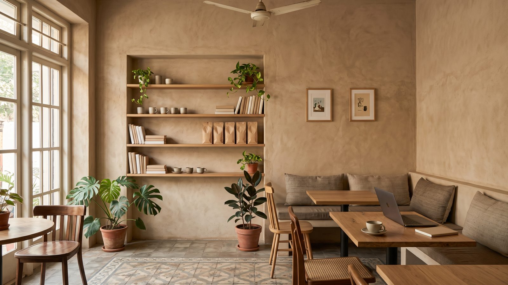
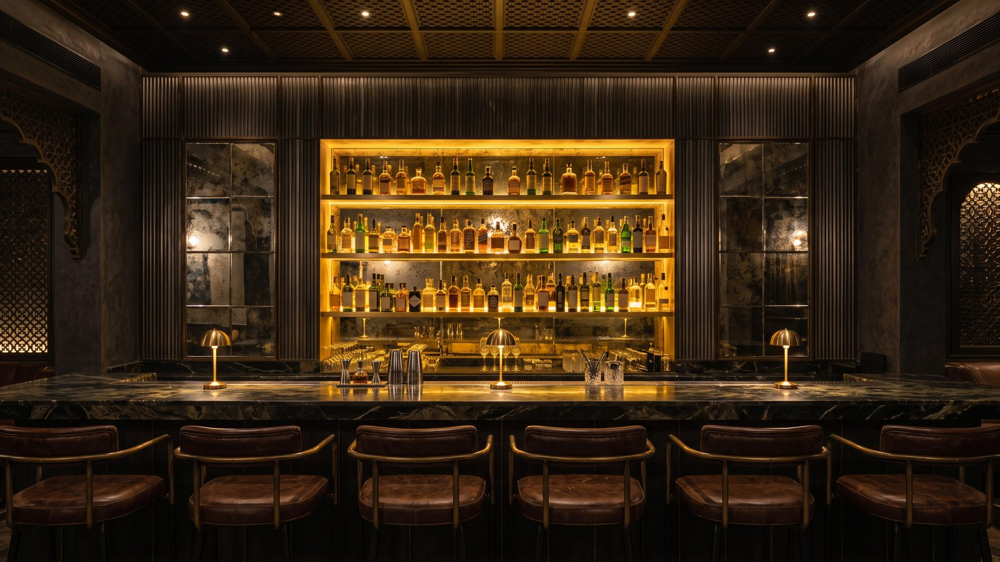
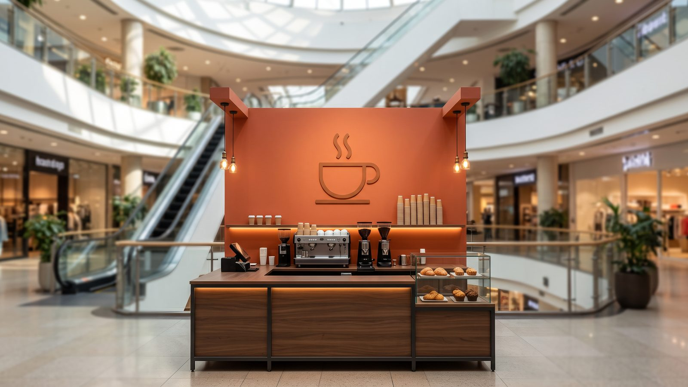
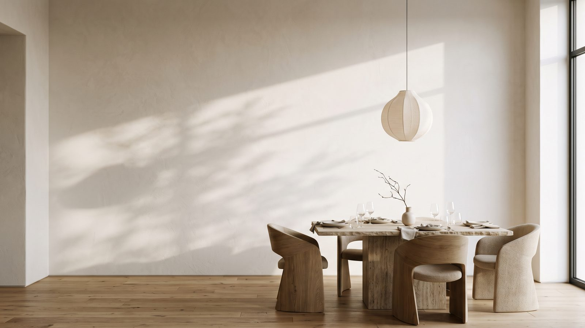

Walk into a restaurant and look around.
What catches your attention?
Perhaps a dramatic installation, a beautifully textured wall, an interesting piece of artwork or a display of objects that seems to tell a story.
Or perhaps, surprisingly, nothing at all.
Just a beautifully finished wall that allows everything around it to breathe.
Now walk into another restaurant where every available surface has been filled with graphics, murals, slogans, photographs, logos and decorative objects.
There is certainly a lot to look at.
But what do you actually remember?
Over the years, working across different F&B formats, I’ve come to appreciate how powerful walls can be in creating a brand environment.
And equally, how easily their potential can be lost when wall treatments become exercises in decoration rather than thoughtful design.
Because walls are not just surfaces. They are an important part of how a brand communicates.
The Difference Between Decorating a Wall and Designing Brand Communication
When designing an F&B space, we consider many elements.
Floors contribute to zoning, guiding movement and creating subtle transitions between different experiences.
Ceilings help define spaces, introduce scale, accommodate lighting and create atmosphere.
But walls offer something particularly valuable.
They sit within the customer’s natural field of vision. They form the backdrop to conversations, dining experiences, photographs and memories.
They can communicate the brand’s personality, heritage, philosophy, product and aspirations.
However, that does not mean every wall needs a story written on it.
In fact, one of the biggest mistakes in restaurant design is assuming that an empty wall is an opportunity that must be filled.
A thoughtfully designed wall should answer a more important question.
What does this wall need to contribute to the overall brand experience?
Sometimes the answer is storytelling.
Sometimes it is creating drama.
Sometimes it is warmth, comfort or a sense of sophistication.
And sometimes, the answer is simply allowing another design element to stand out.
Every F&B Format Needs a Different Wall Strategy
There cannot be one standard formula for treating walls across all restaurant formats.
The customer mindset, time spent within the space, viewing distances, lighting conditions and brand expectations are all different.
Cafés: Creating Familiarity and a Sense of Belonging
Cafés are often spaces where customers spend time beyond the actual act of eating or drinking.
They meet, work, read, socialise or simply take a break.
The wall environment can help create that sense of comfort and belonging.
Artwork, curated shelves, illustrations, material textures and subtle brand references can contribute to a relaxed atmosphere.

But there needs to be restraint.
Too many graphic elements or messages can make a café feel visually busy, particularly when customers are spending extended periods there.
The idea is to create an environment that customers want to return to, not one that demands their attention continuously.
Restaurants: Storytelling That Unfolds Through the Experience
Restaurants offer greater opportunities for layered storytelling.
Depending on the concept, walls can reflect the cuisine, the brand’s origins, its philosophy or the emotional experience it wants to create.
A heritage restaurant might use carefully curated objects, artefacts, photography or traditional materials.
A contemporary dining concept might communicate its identity through abstract artworks, textures or a signature installation.
A premium restaurant might need very little overt communication at all.
The material palette, proportions, lighting and detailing could communicate the intended positioning more effectively than a wall full of graphics.
The important consideration is how the story unfolds as customers move through the restaurant.
The entrance wall, the seating area, the private dining zone and the backdrop behind a focal element need not all communicate with the same intensity.
Every wall should have a role, but not every wall needs to be the hero.
Bars: Creating Energy, Drama and Character
Bars have an interesting design opportunity.
Wall treatments can contribute significantly to mood and personality, especially when viewed under carefully planned lighting.
Mirrors, metal surfaces, sculptural installations, artwork, layered materials and illuminated displays can create depth and visual interest.

But these elements must also respond to how the space transforms between daytime and evening.
A wall that appears subtle during the day might become the most dramatic element of the bar at night.
This is where the relationship between wall treatment, ceiling design and lighting becomes particularly important.
The objective should be to create a distinctive atmosphere, rather than simply adding decorative drama.
Kiosks: Where Every Inch of Communication Matters
Perhaps the most challenging format is the kiosk.
There is very little real estate, limited customer attention and often significant surrounding visual competition.
Unlike a full restaurant, a kiosk may have only a few seconds to establish recognition and communicate what the brand offers.

Here, wall treatment and branding need to work much harder.
Brand identity, product communication, menu visibility, material selection and key visual elements must be carefully prioritised.
Too much information creates confusion.
Too little information may fail to communicate the offering.
The challenge is to find the right balance between visibility, clarity and brand personality.
In a kiosk, good design is not about how much you can communicate. It is about how quickly people understand what matters.
Wall Treatments: One Strategy, Many Possibilities
One of the most enjoyable aspects of designing F&B environments is the variety of approaches available.
There is no reason for every project to rely on murals, wall graphics or framed artworks.
The treatment should emerge from the brand.
Statement installations
A custom installation can become the defining visual element of an entire restaurant.
It might be inspired by the brand’s product, heritage, logo, design language or a particular concept.
Done thoughtfully, it can create a strong visual memory without requiring excessive branding elsewhere.
Artwork and illustrations
Art can bring personality, emotion and local relevance into a space.
But it should be curated with purpose.
The question is not whether an artwork looks attractive in isolation, but whether it contributes to the overall brand environment.
Objects and curated displays
Sometimes a collection of seemingly ordinary objects, books, merchandise, packaging, memorabilia or interesting artefacts can communicate more effectively than a printed graphic.
The challenge is curation.
Every object should feel as though it belongs there, rather than being added simply to fill a shelf.
Materials and textures
A wall can tell a story without a single word.
Brick, timber, stone, textured plaster, metal, tile and other materials can communicate warmth, authenticity, craftsmanship, modernity or refinement.
The choice, combination and detailing of these materials often say more about a brand than conventional signage.
Typography and a single powerful message
There are occasions when one carefully selected line is all that is needed.
But the words must matter.
They should reflect something distinctive about the brand, not simply repeat a popular phrase that could belong to any café or restaurant.
Typography, scale, positioning and lighting are as important as the message itself.
The intentionally quiet wall
This is perhaps the most underrated treatment.
A clean wall can give the eye a place to rest, highlight an architectural feature or allow furniture, food presentation, lighting or another statement element to take centre stage.

Restraint is not the absence of design.
It is often evidence of good design judgment.
The Importance of Visual Hierarchy
Imagine a restaurant where every wall has a bold graphic, every corner features an installation and every seating zone has a different colour or material.
Individually, each element might be interesting.
Together, they may create visual confusion.
This is why wall design needs hierarchy.
We should identify which wall deserves to become a focal point, which walls need to support the overall ambience and which should remain relatively quiet.
Even within a single wall, the balance between texture, graphics, objects, branding and empty space is important.
Customers should experience a cohesive environment, not a collection of unrelated design ideas.
The strongest spaces are not necessarily the ones with the most design elements. They are the ones where the elements work together.
Designing for Longevity, Not Just Opening Day
There is another consideration that I believe deserves greater attention.
How will this wall look five or ten years from now?
Restaurant interiors need to remain relevant long after the initial excitement of a launch.
Trendy graphics, overly literal themes and excessive decorative treatments can sometimes make spaces feel dated sooner than expected.
Materials also need to be evaluated for maintenance, cleaning, wear and ease of replacement.
A beautifully designed installation that constantly collects dust or is difficult to maintain may become an operational challenge.
Wall treatments therefore need to balance visual impact with durability, maintenance and long term adaptability.
And for brands expanding across multiple outlets, there is yet another dimension.
Which elements of the wall treatment represent the essential brand identity, and which can adapt to individual locations?
Brand consistency does not require identical walls everywhere.
It requires a recognisable design language that can be expressed appropriately across different formats and spaces.
The Question I Always Come Back To
When designing a restaurant, the objective should not be to create as many interesting walls as possible.
It should be to create an environment where every element contributes to the brand experience.
That means understanding the brand before choosing the artwork.
Understanding the customer before deciding the communication.
Understanding the space before choosing the installation.
And understanding the desired experience before deciding how much decoration is necessary.
Because ultimately, customers may not remember every artwork, every material or every design feature.
But they should remember how the space made them feel.
Walls talk. The art of good restaurant design is knowing what they should say, how loudly they should say it and when they should remain silent.